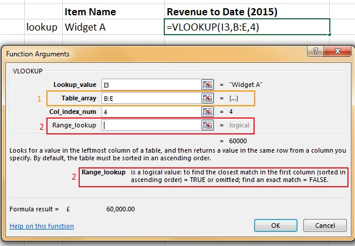
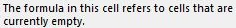
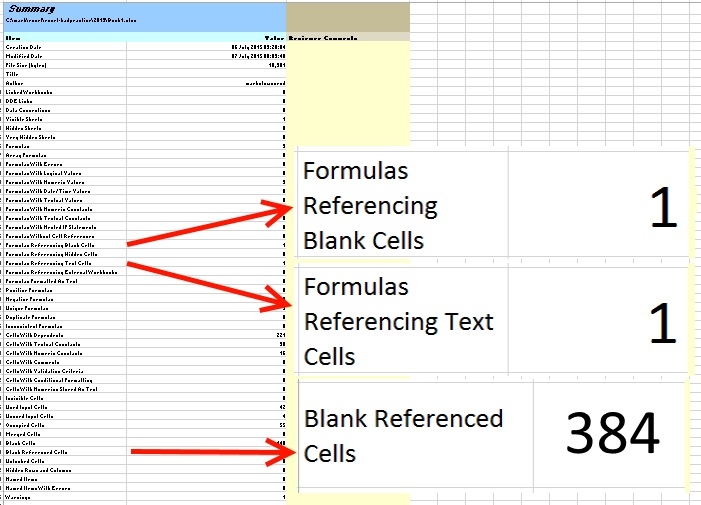
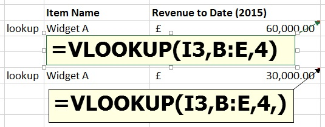

Greedy formulas and layout errors, the case for a novice mode in Excel.
 What you are looking at is an Excel 2013 worksheet containing a VLOOKUP formula written slightly incorrectly, giving completely the wrong result. What you can also see is Excel giving two indications that something might be wrong. However if you put "background error check excel" in to Google you will find as many links telling you how to turn it off as how to use it properly.1 As I'll demonstrate, using it to trap this particular error scenario is not straightforward. If you'd like to follow along the code is in the 2013 folder in my Github repo. Please star it if it helps you.
What you are looking at is an Excel 2013 worksheet containing a VLOOKUP formula written slightly incorrectly, giving completely the wrong result. What you can also see is Excel giving two indications that something might be wrong. However if you put "background error check excel" in to Google you will find as many links telling you how to turn it off as how to use it properly.1 As I'll demonstrate, using it to trap this particular error scenario is not straightforward. If you'd like to follow along the code is in the 2013 folder in my Github repo. Please star it if it helps you.
I've spent a lot of time over the last several years in big corporates teaching people how to use Excel. In that time I've seen plenty of VLOOKUPs that have been entered like this. What's more I've heard the use of this particular formula syntax (with the second argument - the range to perform the look up in - specified as columns, this is the greedy in the blog title, and the deliberate absence of the final argument) advocated at a peer to peer level, in other words, colleagues learning from their colleagues.
In the rest of this post I'll examine what's going wrong, how Excel is trying to tell us and where that explanation requires some intuitive leaps which are most likely beyond the understanding of novice spreadsheet users.
The following image is the function wizard dialogue for the particular formula in question and I draw your attention to the elements I've labelled 1 and 2.

The obliquely named Table_array is the range, in the leftmost column of which you will attempt to match your Lookup_value. Now this is a legitimate range, (it's all of column B, C, D and E), but in the case of this workbook there is data further down in those columns, out of sight (this is the layout error in the blog title, there are 1,048,576 rows after all), impacting the result. The justification I've heard for using the range
B:Erather than$B$3:$E$6is because it is quicker to select and because using that syntax you won't miss any data or have to update your formula should more rows be added to the Table_array. Well, given a preference for use of the mouse over the keyboard, not uncommon in novice users, then I agree it probably is quicker to select. And you certainly won't miss any data but the danger is you will include data that you didn't intend to be included. Finally there are better ways to have a formula that will automatically update when new rows are added, Tables come to mind immediately.The even more obliquely named Range_lookup is displayed in standard font (as opposed to bold), indicating that it is optional. It hasn't been entered and the behaviour is as expected2, an approximate match. Now the justification I've heard for this is, circularly: 'it's optional, you don't need to enter it'. I don't want to examine approximate matching on text values, I want to simply say that it is the edge case. I use and teach the heuristic that when matching text values this final argument should always be specified as
FALSEindicating an exact match is required. That's the case in the example under discussion here.
So in summary, my experience and expertise tells me that the final argument is wrong for matching on text values and the second argument should be more parsimoniously stated. But what does the error checking say?

Quite honestly, that doesn't seem like a big deal to me. I've also run the INQUIRE workbook analysis on this book and in the report the following information is presented. I've drawn out the salient points for you because frankly, it isn't obvious.

Once again we're referencing blank cells. Once again, no big deal. We also have a formula referencing text cells. Well that's what we wanted we're matching on the widget name after all so, no big deal. Granted, 384 blank referenced cells jumps off the page a bit but that's just stating the first point the other way round so, no big deal. But, the error is egregious! We're reporting the revenue for the full year 2014 sales of Widget A instead of the part year 2015 sales. Where is the warning:
Danger, Will Robinson!
Instead it's a meeker:
Danger? Will Robinson.
Taking the text 'error' first and drilling in to the appropriate sheet [Text Cell Refs] on the analysis workbook we should interpret it like this: the formula is a lookup and it is working on cells containing text. We have to link that in our mental Excel heuristics dictionary to the rule of thumb: matching on text values must be exact. Having made that association then we know we must make a correction to the formula at least as follows, from =VLOOKUP(I3,B:E,4) to =VLOOKUP(I3,B:E,4,FALSE). Now, this will be enough to fix the error but let's continue.
Taking the two blank 'errors' next and drilling in to the appropriate sheets [Blank Cell Refs] and [Blank Referenced Cells]on the analysis workbook we should interpret it like this: the formula is a lookup and it is looking up in a range that contains blank cells. Now in and of itself that is not a problem for a lookup formula but neither is it necessarily an advantage. At this point we should consult our mental Excel heuristics dictionary for the rule of thumb: parsimony over greed when consuming arguments in a function. If we're not swayed by this we should, at a minimum, traverse the entirety of the left-most column (B)3 of the referenced range (that's the column where the lookup is being matched) and in doing so we would discover the data for 2014. We could then move the 2014 data somewhere else but instead we will make a correction to the formula at least as follows, from =VLOOKUP(I3,B:E,4) to =VLOOKUP(I3,B3:E6,4). That will also be enough to fix the error.
Finally we should make both corrections so the formula becomes =VLOOKUP(I3,B3:E6,4,FALSE) or better yet =VLOOKUP(I3,$B$3:$E$6,4,FALSE).
I think you'll agree that none of that was particularly obvious. That's because that use of the formula is not wrong, per se, it's only ill-advised. Therefore it's difficult to catch it. Were there a syntax error Excel might catch it as a #REF! or it might pop up a warning and prevent the formula from being calculated. But it can't tell you this is outright wrong because it's not. But it is!
In order to address this, in my opinion, Excel should have a novice mode. I will expand on this in future blog posts but for the time being and as a result of this investigation, that novice mode should have the following functionality:
- forbid optional arguments in vlookup (at least, I'll look in to whether this could be extended to all built in functions or a popular subset)
- forbid raw grid references and only permit the use of tables (which are a very useful abstraction layer over the grid).
I know I'm not the only one with a view on the Excel flexibility vs control debate. So I'd very much appreciate any comments you would like to share on the idea of a novice mode. In the near future I'll write some more posts further examining this.
Have fun!
Footnotes:
I'm aware how unscientific this statement is given the tailored search results from Google nevertheless the point that there are a lot of links advising how to disable error checking is valid. Try it for yourself and see what you get. ↩
As an aside I think there is a case to be made for an apparent inconsistency in not entering the final argument. Spot the subtle difference in the formulas below but the big difference in the formula result. I'll follow up on this in a future post. ↩
Use the key combination CTRL + DOWN ARROW to quickly skip from data region to data region. ↩